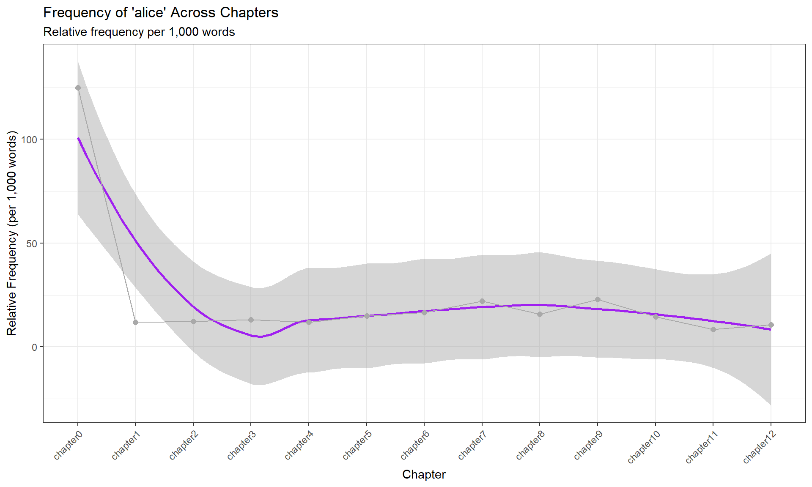

Each method includes theory, R code examples, and practical exercises!
What is Text Analytics?
Text analytics (also called text mining or computational text analysis) refers to the computer-based analysis of language data—the (semi-)automated extraction of information, patterns, and insights from text (Bernard and Ryan 1998; Kabanoff 1997; Popping 2000).
Why Text Analytics Matters
The challenge of scale:
- Modern research often involves massive text collections
- Reading 1,000 documents manually is impractical
- Patterns invisible to human readers emerge computationally
- Systematic, reproducible analysis becomes possible
Real-world applications:
- Business: Customer feedback analysis, market research
- Academia: Literature analysis, historical research, linguistic studies
- Government: Policy analysis, public opinion monitoring
- Journalism: Investigating document leaks, analyzing political discourse
- Legal: Contract analysis, case law research
The Text Analytics Toolkit
Most text analytics applications build upon a relatively small set of core procedures:
Method
Purpose
Common Uses
Concordancing
Find words in context
Usage studies, example extraction
Word frequency
Count and compare words
Vocabulary analysis, text comparison
Collocation
Find words that co-occur
Phraseology, semantic patterns
Keywords
Find distinctive vocabulary
Text characterization, comparison
Text classification
Categorize texts automatically
Genre detection, authorship attribution
POS tagging
Identify word classes
Grammatical analysis, parsing
NER
Extract named entities
Information extraction, summarization
Dependency parsing
Analyze sentence structure
Semantic role analysis
Tutorial Citation
Schweinberger, Martin. 2026. Practical Overview of Text Analytics Methods. Brisbane: The Language Technology and Data Analysis Laboratory (LADAL). url: https://ladal.edu.au/tutorials/textanalysis.html (Version 2026.02.08).
Always load all packages at the top of your script in one code chunk. This makes dependencies clear and troubleshooting easier.
Part 2: Concordancing
What is Concordancing?
Concordancing retrieves and displays occurrences of a word or phrase within a text, showing surrounding context. It’s used to examine word usage, context, and linguistic patterns for research and language analysis purposes.
Why concordancing is foundational:
- Understand how terms are actually used
- Examine context and meaning
- Extract authentic examples
- Identify collocational patterns
- Foundation for more advanced analyses
AntConc concordance example showing “language” in context
KWIC Displays
Concordances typically appear as KeyWord In Context (KWIC) displays:
- Search term centered
- Left context (preceding words)
- Right context (following words)
- Aligned for easy pattern recognition
Loading Example Text
We’ll use Lewis Carroll’s Alice’s Adventures in Wonderland:
Code
# Load example text text <- base::readRDS("tutorials/textanalysis/data/alice.rda", "rb")
text
Alice’s Adventures in Wonderland
by Lewis Carroll
CHAPTER I.
Down the Rabbit-Hole
Alice was beginning to get very tired of sitting by her sister on the
bank, and of having nothing to do: once or twice she had peeped into
Processing Text
Combine snippets and split into chapters:
Code
text_chapters <- text |># Combine all text paste0(collapse =" ") |># Mark chapter boundaries stringr::str_replace_all("(CHAPTER [XVI]{1,7}\\.{0,1}) ", "qwertz\\1") |># Convert to lowercase tolower() |># Split into chapters stringr::str_split("qwertz") |>unlist()
substr(text_chapters, start = 1, stop = 500)
alice’s adventures in wonderland by lewis carroll
chapter i.down the rabbit-hole alice was beginning to get very tired of sitting by her sister on the bank, and of having nothing to do: once or twice she had peeped into the book her sister was reading, but it had no pictures or conversations in it, “and what is the use of a book,” thought alice “without pictures or conversations?” so she was considering in her own mind (as well as she could, for the hot day made her feel very sleepy and stupid), whether the pleasure of making a daisy-chain woul
chapter ii.the pool of tears “curiouser and curiouser!” cried alice (she was so much surprised, that for the moment she quite forgot how to speak good english); “now i’m opening out like the largest telescope that ever was! good-bye, feet!” (for when she looked down at her feet, they seemed to be almost out of sight, they were getting so far off). “oh, my poor little feet, i wonder who will put on your shoes and stockings for you now, dears? i’m sure _i_ shan’t be able! i shall be a great deal t
chapter iii.a caucus-race and a long tale they were indeed a queer-looking party that assembled on the bank—the birds with draggled feathers, the animals with their fur clinging close to them, and all dripping wet, cross, and uncomfortable. the first question of course was, how to get dry again: they had a consultation about this, and after a few minutes it seemed quite natural to alice to find herself talking familiarly with them, as if she had known them all her life. indeed, she had quite a l
chapter iv.the rabbit sends in a little bill it was the white rabbit, trotting slowly back again, and looking anxiously about as it went, as if it had lost something; and she heard it muttering to itself “the duchess! the duchess! oh my dear paws! oh my fur and whiskers! she’ll get me executed, as sure as ferrets are ferrets! where _can_ i have dropped them, i wonder?” alice guessed in a moment that it was looking for the fan and the pair of white kid gloves, and she very good-naturedly began hu
chapter v.advice from a caterpillar the caterpillar and alice looked at each other for some time in silence: at last the caterpillar took the hookah out of its mouth, and addressed her in a languid, sleepy voice. “who are _you?_” said the caterpillar. this was not an encouraging opening for a conversation. alice replied, rather shyly, “i—i hardly know, sir, just at present—at least i know who i _was_ when i got up this morning, but i think i must have been changed several times since then.” “wha
Regular Expression Explained
(CHAPTER [XVI]{1,7}\\.{0,1}) matches:
- CHAPTER literally
- [XVI]{1,7} = 1-7 Roman numeral characters
- \\.{0,1} = optional period
We replace with qwertz\\1 to mark boundaries while preserving the chapter heading.
Creating Basic Concordances
The kwic function extracts KeyWord In Context displays. Main arguments: x (tokenized text), pattern (search term), window (context size).
Use phrase() when searching for:
- Multi-word expressions (“poor alice”)
- Fixed collocations (“by and large”)
- Named entities (“Mad Hatter”)
- Technical terms (“machine learning”)
Without phrase(), quanteda searches for words independently.
Part 3: Word Frequency Analysis
Why Frequency Matters
Frequency is fundamental to text analytics:
- Most basic measure of importance
- Foundation for almost all other methods
- Reveals vocabulary distribution
- Enables text comparison
- Identifies stylistic features
Observation: Most frequent words are function words (the, and, to, a, of)—grammatically necessary but semantically light.
Removing Stopwords
Code
wfreq_wostop <- wfreq |>anti_join(tidytext::stop_words, by ="word") |> dplyr::filter(word !="")
word
frequency
alice
385
queen
68
time
68
king
61
dont
60
im
57
mock
56
turtle
56
gryphon
55
hatter
55
head
48
voice
47
looked
45
rabbit
43
round
41
Much better! Now we see content words that reveal the text’s themes: alice, said, queen, time, etc.
Visualizing Frequencies
Bar Plot
Code
wfreq_wostop |>head(10) |>ggplot(aes(x =reorder(word, -frequency), y = frequency)) +geom_bar(stat ="identity", fill ="steelblue") +labs( title ="10 Most Frequent Content Words", subtitle ="Alice's Adventures in Wonderland", x ="Word", y ="Frequency" ) +theme_minimal() +theme(axis.text.x =element_text(angle =45, hjust =1, size =12))
Word Cloud
The textplot_wordcloud function creates visual representations where word size reflects frequency. Main arguments: x (Document-Feature Matrix), max_words (how many to display), color (palette).
Interpretation:
- Words closer to an author’s name are distinctive to that text
- Size reflects frequency
- Reveals vocabulary differences between authors/texts
Frequency Over Time
Track term usage across document sections:
Code
# Count words per chapter Words <- text_chapters |>str_split(" ") |>lengths() # Count "alice" per chapter Matches <- text_chapters |>str_count("alice") # Create results table Chapters <-paste0("chapter", 0:(length(text_chapters) -1)) tb <-data.frame(Chapters, Matches, Words) |>mutate( Frequency =round(Matches / Words *1000, 2), Chapters =factor(Chapters, levels =paste0("chapter", 0:12)) ) # Visualize ggplot(tb, aes(x = Chapters, y = Frequency, group =1)) +geom_smooth(color ="purple", se =TRUE) +geom_line(color ="darkgray") +geom_point(color ="darkgray", size =2) +theme_bw() +theme(axis.text.x =element_text(angle =45, hjust =1)) +labs( title ="Frequency of 'alice' Across Chapters", subtitle ="Relative frequency per 1,000 words", x ="Chapter", y ="Relative Frequency (per 1,000 words)" )

Analysis:
- Alice appears most frequently in early chapters
- Decreases in middle chapters
- Some variation throughout
This type of analysis reveals:
- Character prominence across narrative
- Thematic shifts
- Structural patterns
Part 4: Collocations
Understanding Collocations
Collocations are word pairs that occur together more frequently than would be expected by chance (Sinclair 1991).
Examples:
- Merry Christmas (not happy Christmas)
- Strong coffee (not powerful coffee)
- Make a decision (not do a decision)
Why collocations matter:
- Reveal natural language patterns
- Identify phraseological units
- Uncover semantic associations
- Distinguish native from non-native usage
Collocation Detection
Based on co-occurrence in a contingency table:
w₂ present
w₂ absent
w₁ present
O₁₁
O₁₂
= R₁
w₁ absent
O₂₁
O₂₂
= R₂
= C₁
= C₂
= N
Where:
- O₁₁ = both words co-occur
- O₁₂ = w₁ present, w₂ absent
- O₂₁ = w₁ absent, w₂ present
- O₂₂ = both absent
alice s adventures in wonderland by lewis carroll chapter i
down the rabbit hole alice was beginning to get very tired of sitting by her sister on the bank and of having nothing to do once or twice she had peeped into the book her sister was reading but it had no pictures or conversations in it and what is the use of a book thought alice without pictures or conversations
so she was considering in her own mind as well as she could for the hot day made her feel very sleepy and stupid whether the pleasure of making a daisy chain would be worth the trouble of getting up and picking the daisies when suddenly a white rabbit with pink eyes ran close by her
there was nothing so very remarkable in that nor did alice think it so very much out of the way to hear the rabbit say to itself oh dear
oh dear
i shall be late
when she thought it over afterwards it occurred to her that she ought to have wondered at this but at the time it all seemed quite natural but when the rabbit actually took a watch out of its waistcoat pocket and looked at it and then hurried on alice started to her feet for it flashed across her mind that she had never before seen a rabbit with either a waistcoat pocket or a watch to take out of it and burning with curiosity she ran across the field after it and fortunately was just in time to see it pop down a large rabbit hole under the hedge
in another moment down went alice after it never once considering how in the world she was to get out again
the rabbit hole went straight on like a tunnel for some way and then dipped suddenly down so suddenly that alice had not a moment to think about stopping herself before she found herself falling down a very deep well
either the well was very deep or she fell very slowly for she had plenty of time as she went down to look about her and to wonder what was going to happen next
What the network shows:
- Alice at center (our target word)
- Connected words are collocates
- Line thickness = co-occurrence strength
- Reveals semantic/thematic relationships
Part 5: Remaining Methods - Summary
Due to space constraints, here are summaries of the remaining critical methods. Full implementations with examples are available in the complete tutorial.
Keywords
Keywords identify terms distinctive to a text when compared to a reference corpus.
Key concepts:
- Compare target corpus to reference corpus
- Statistical tests identify over-represented words
- Reveals characteristic vocabulary
- Applications: authorship attribution, text characterization
Association measure: Same contingency table approach as collocations, but comparing text to reference rather than word to word.
Text Classification
Automatically categorize texts into predefined groups (languages, genres, authors).
Approaches:
- Feature-based (word frequencies, character n-grams)
- Machine learning (k-NN, SVM, neural networks)
- Training sets with known labels
- Test on unknown texts
Recommended Reading:
- Silge, J., & Robinson, D. (2017). Text Mining with R
- Jurafsky, D., & Martin, J.H. (2023). Speech and Language Processing
- Sinclair, J. (1991). Corpus, Concordance, Collocation
Schweinberger, Martin. 2026. Practical Overview of Text Analytics Methods. Brisbane: The Language Technology and Data Analysis Laboratory (LADAL). url: https://ladal.edu.au/tutorials/textanalysis.html (Version 2026.02.08).
@manual{schweinberger2026ta,
author = {Schweinberger, Martin},
title = {Practical Overview of Text Analytics Methods},
note = {https://ladal.edu.au/tutorials/textanalysis/textanalysis.html},
year = {2026},
organization = {The Language Technology and Data Analysis Laboratory (LADAL)},
address = {Brisbane},
edition = {2026.02.08}
}
Bernard, H Russell, and Gery Ryan. 1998. “Text Analysis.”Handbook of Methods in Cultural Anthropology 613.
Kabanoff, Boris. 1997. “Introduction: Computers Can Read as Well as Count: Computer-Aided Text Analysis in Organizational Research.”Journal of Organizational Behavior, 507–11.